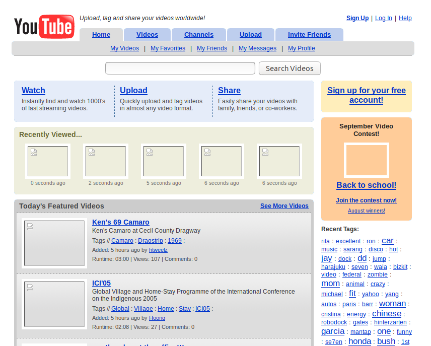

Le web 2.0: une approche plus interactive
Le concept de Web 2.0 a été définit par Tim O'Reilly en 2005. Le principal point de ce concept du web est de casser la hiérarchie entre producteur de sites et le consommateur, en rendant l'internaute acteur de l'environnement web. Avec cette vision conceptuelle, le producteur du site ne peut plus maitriser le temps et ne sait pas quand l'internaute va recevoir l'information. De plus, l'internaute peut également devenir producteur d'information, là ou jusqu'ici il ne pouvait que consulter le contenu en ligne.
Un exemple très concret est l'apparition de YouTube en 2005 : l'internaute peut seulement se contenter de regarder des vidéos en ligne, mais il peut aussi en publier gratuitement ou réagir via l'espace de commentaires à des vidéos déjà en ligne.

C'est également le début de l'apogée des blogs et des réseaux sociaux, notamment avec Facebook et SkyBlog ou c'est la publication du contenu par l'internaute qui est au coeur du fonctionnement : l'internaute peut mettre en ligne du contenu qui sera visible par d'autres internautes.
Les sites web deviennent platemforme
Le concept d'intelligence collective
Cette nouvelle approche du web orientée publication par l'internaute a fait peut-à-peut apparaitre la notion de plateforme web. La plateforme web contrairement à un site web classique, favorise l'intelligence collective, ou chacun participe à l'élaboration du contenu. Wikipédia en est l'exemple le plus connu : chacun peut participer à l'élaboration du contenu. Contrairement à une encyclopédie classique ou l'auteur la rédige et les lecteurs la consulte, les lecteurs peuvent apporter leurs connaissances en la complétant. Néanmoins, le concept est à double tranchant : d'un côté on l'encyclopédie est susceptible de recueillir plus d'informations et donc potentiellement de connaissances pour le lecteur, mais de l'autre, le risque non négligeable de voir des informations erronées.
Des services web personnalisables
Le côté adaptable et personnalisable est également de mise dans le web 2.0. Afin d'adapter le besoin à chacun, chaque utilisateur peut ajouter des extensions ou "widgets" aux applications web. C'est le cas par exemple avec les add-on que l'on pouvait ajouter sur le navigateur Firefox ou encore les extensions sur les plateforme de travail collaboratif tel qu'Office 365.
La personnalisation est aussi bien possible pour le côté pratique et esthétique (thèmes visuels, positionnement de boutons ou d'éléments sur une page...) que pour le côté fonctionnalité. Nous pourrions citer l'application web Gmail qui propose un certain nombre de thème visuel que l'utilisateur peut choisir pour la partie esthétique et pour le côté fonctionnalité, on peut citer Office 365 avec les éléments que l'on peut désactiver pour soi, ou si on est administrateur, les éléments que les utilisateurs pourront accéder ou non. Par exemple, la possibilité de rendre un document partageable ou non.